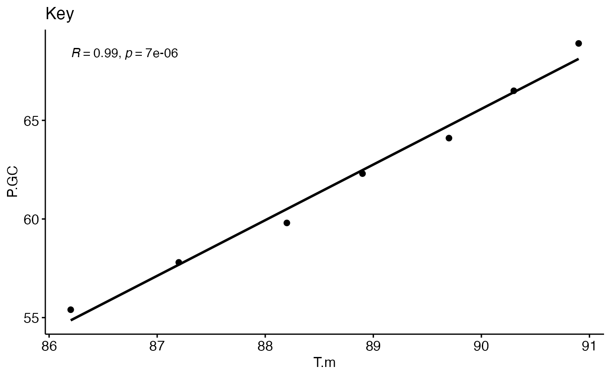
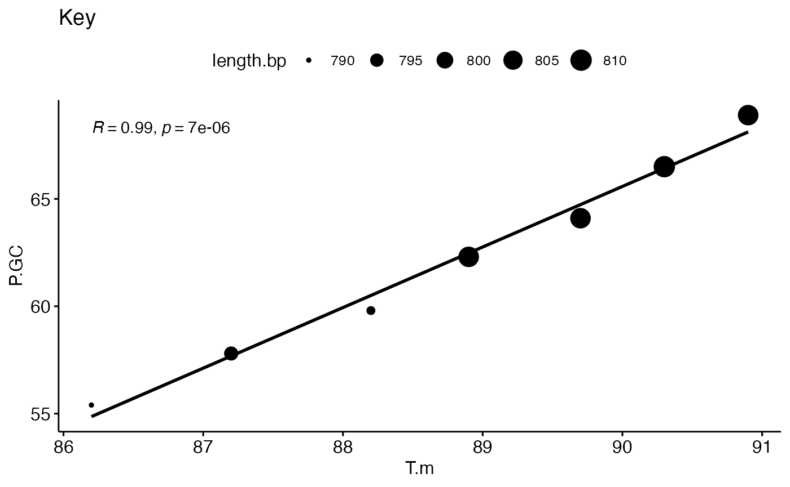
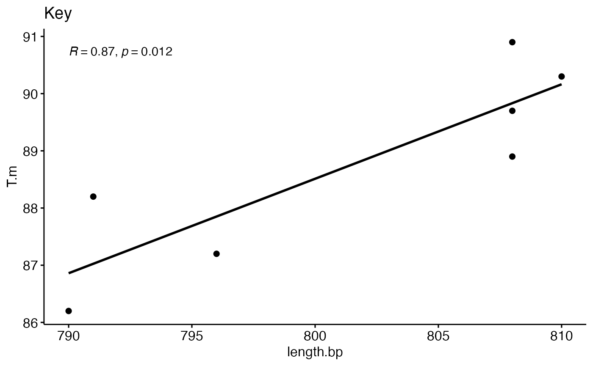
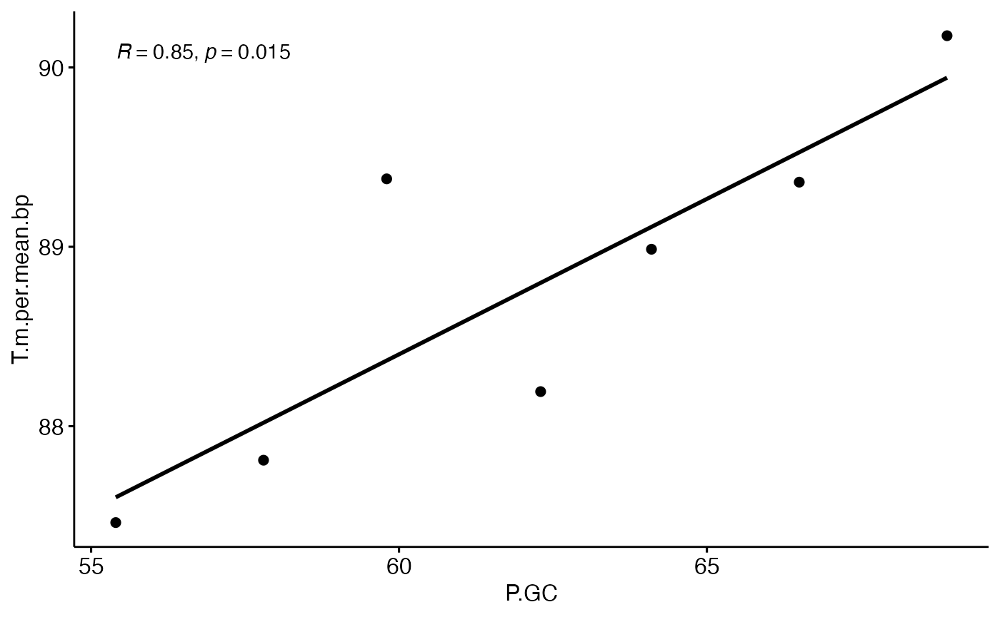
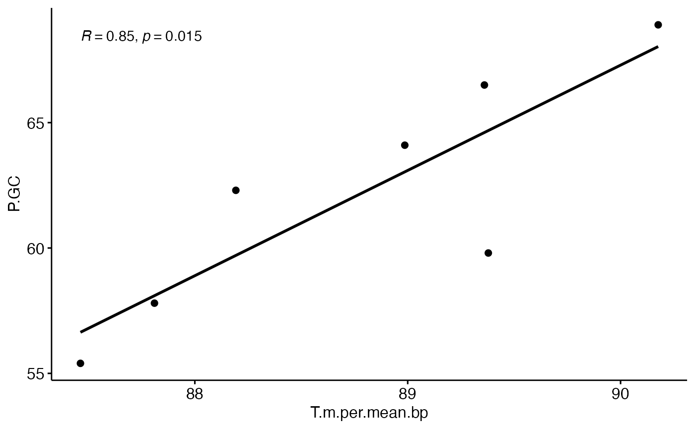

prog_data_frame_by_hand_problem_set-KEY.Rmd
library(compbio4all)HAS SCORING FUNCTION AT END
SAVE THIS FILE TO A SAFE PLACE WHERE YOU CAN RELOCATE IT
In this exercise we will rebuild a data table and figure in a paper by kimura_KEY et al. “Growth temperatures of archaeal communities can be estimated from the guanine‐plus‐cytosine contents of 16 S rRNA gene fragments”. The paper can be downloaded from https://doi.org/10.1111/1758-2229.12035
This data is found in the dayhoff package. The only other package you need it ggpubr for plotting.
Read the data off of the original Table 1 and assign them to the objects put in place below. Delete the NA.
# strain initials (eg, "Methanocalculus pumilus" = "MP")
strain <- c("MP","NB","MO","MH","SA","SM","PO")
# Growth temperatures
T.min <- c( 25, 25, 40, 50, 57, 70, 80)
T.opt <- c( 35, 45, 60, 70, 80, 92, 105)
T.max <- c( 45, 55, 75, 80, 89, 98, 110)
# Accession number; leave this code as is
accession <- rep(NA, length(strain))
# Length of 16sRNA gene in BP
length.bp <- c(790,796,791,808,808,810,808)
# Percent GC
P.GC <- c(55.4,57.8,59.8,62.3,64.1,66.5,68.9)
# Melting temperature
T.m <- c(86.2,87.2,88.2,88.9,89.7,90.3,90.9)
# References - leave this as is
reference <-rep(NA, length(strain))In the chunk below, type a command to check the size of one of the objects you just made.
length(T.m)
#> [1] 7In the chunk below, type a command to check the type of data structure of the object you just made.
is(T.m)
#> [1] "numeric" "vector"
is.vector(T.m)
#> [1] TRUE
class(T.m)
#> [1] "numeric"
is.numeric(T.m)
#> [1] TRUE
typeof(T.m) #accetable, but this doesn't tell you data strcture
#> [1] "double"What is the mean T.opt? Replace the NA and type the appropriate code below .
mean.T.opt <- mean(T.opt)
mean.T.opt
#> [1] 69.57143What is the maximum P.GC value?
max.P.GC <- max(P.GC)
max.P.GC
#> [1] 68.9Now, re-make Table 1 of kimura_KEY et al (2013).
Type in the code necessary to build that dataframe; assign it to an object called “kimuar”
# Delete the "NA" and add the appropirate code
kimura_KEY <- data.frame(strain,
T.min, T.opt, T.max,
accession,
length.bp, P.GC, T.m,
reference)
kimura_KEY
#> strain T.min T.opt T.max accession length.bp P.GC T.m reference
#> 1 MP 25 35 45 NA 790 55.4 86.2 NA
#> 2 NB 25 45 55 NA 796 57.8 87.2 NA
#> 3 MO 40 60 75 NA 791 59.8 88.2 NA
#> 4 MH 50 70 80 NA 808 62.3 88.9 NA
#> 5 SA 57 80 89 NA 808 64.1 89.7 NA
#> 6 SM 70 92 98 NA 810 66.5 90.3 NA
#> 7 PO 80 105 110 NA 808 68.9 90.9 NAUsing the dataframe as the source of the data, type a command which tells you the mean of the T.min values
mean(kimura_KEY$T.min)
#> [1] 49.57143Re-make Figure 2 of kimura_KEY et al (2013). Include the following elements
The original Figure 2 has the sample size listed and some small error bars around the data points. Don’t worry about this.
In addition to previous exercises you may with to consult this site: http://www.sthda.com/english/articles/24-ggpubr-publication-ready-plots/78-perfect-scatter-plots-with-correlation-and-marginal-histograms/
#Note: making plots doesn't involve the assignment operator
ggscatter(data = kimura_KEY,
y = "P.GC",
x = "T.m",
add = "reg.line",
cor.coef = T) +
ggtitle("Key")
#> `geom_smooth()` using formula 'y ~ x'
Now add teh arguement size = “length.bp” so that the size of the points is scaled to that column.
#Note: making plots doesn't involve the assignment operator
ggscatter(data = kimura_KEY,
y = "P.GC",
x = "T.m",
add = "reg.line",
size = "length.bp",
cor.coef = T) +
ggtitle("Key")
#> `geom_smooth()` using formula 'y ~ x'
Create a graph that shows the relationship between T. and length.bp
ggscatter(data = kimura_KEY,
y = "T.m",
x = "length.bp",
add = "reg.line",
cor.coef = T) +
ggtitle("Key")
#> `geom_smooth()` using formula 'y ~ x'
Divide T.m by by length.bp; assign this to a column in the table called T.m.per.bp
kimura_KEY$T.m.per.bp <- kimura_KEY$T.m/kimura_KEY$length.bp
# Other versions also work and are equivalent
T.m/length.bp == c(T.m/length.bp)
#> [1] TRUE TRUE TRUE TRUE TRUE TRUE TRUE
kimura_KEY$T.m/kimura_KEY$length.bp == c(T.m/length.bp)
#> [1] TRUE TRUE TRUE TRUE TRUE TRUE TRUEAssign the mean length.bp to an object called mean.length.bp
mean.length.bp <- mean(kimura_KEY$length.bp)Multiply the column T.m.per.bp by the value mean.length.bp. Assign it to a column in the dataframe called T.m.per.mean.bp
kimura_KEY$T.m.per.mean.bp <- kimura_KEY$T.m.per.bp*mean.length.bpThe new column created
mean(kimura_KEY$T.m.per.mean.bp)
#> [1] 88.76684Create a graph like Figure 2 from the original paper but using T.m.per.mean.bp.
T.m (now T.m.per.mean.bp) on x-axis y axis is still P.GC
ggscatter(data = kimura_KEY,
y = "T.m.per.mean.bp",
x = "P.GC",
add = "reg.line",
cor.coef = T)
#> `geom_smooth()` using formula 'y ~ x'
ggscatter(data = kimura_KEY,
x = "T.m.per.mean.bp",
y = "P.GC",
add = "reg.line",
cor.coef = T)
#> `geom_smooth()` using formula 'y ~ x'
reference <-
# rename final data frame
kimura <- kimura_KEY
#key objects and columns created
key.list <- list( #strain = c("MP","NB","MO","MH","SA","SM","PO"),
T.min = c( 25, 25, 40, 50, 57, 70, 80),
T.opt = c( 35, 45, 60, 70, 80, 92, 105),
T.max = c( 45, 55, 75, 80, 89, 98, 110),
# accession = rep(NA, length(strain)),
length.bp = c(790,796,791,808,808,810,808),
P.GC = c(55.4,57.8,59.8,62.3,64.1,66.5,68.9),
T.m = c(86.2,87.2,88.2,88.9,89.7,90.3,90.9),
# reference = rep(NA, length(strain)),
mean.T.opt = mean(c( 35, 45, 60, 70, 80, 92, 105)),
max.P.GC = max(c(55.4,57.8,59.8,62.3,64.1,66.5,68.9)),
mean.length.bp = mean(c(790,796,791,808,808,810,808)),
T.m.per.bp = c(86.2,87.2,88.2,88.9,89.7,90.3,90.9)/c(790,796,791,808,808,810,808),
T.m.per.mean.bp = c(86.2,87.2,88.2,88.9,89.7,90.3,90.9)/c(790,796,791,808,808,810,808)*mean(c(790,796,791,808,808,810,808)))
score_assignment <- function(){
score.dataframe <- data.frame(
i = 1:length(key.list),
object =names(key.list),
exists = NA,
correct = NA,
stringsAsFactors = F)
for(i in 1:length(key.list)){
object.i.name <- score.dataframe$object[i]
score.dataframe$exists[i] <- exists(object.i.name, envir = .GlobalEnv)
#see if object exists in memory
if(exists(object.i.name) == TRUE){
object.i <- try(get(object.i.name,envir = .GlobalEnv))
object.i.check <- key.list[[object.i.name]] == object.i
object.i.score <- ifelse(any(object.i.check != TRUE) == FALSE, 1, 0)
score.dataframe$correct[i] <- object.i.score
}
# see if object stored just in dataframe
if(exists(object.i.name) == FALSE){
object.i <- try(kimura[,object.i.name])
object.i.check <- key.list[[object.i.name]] == object.i
object.i.score <- ifelse(any(object.i.check != TRUE) == FALSE, 1, 0)
score.dataframe$correct[i] <- object.i.score
score.dataframe$exists[i] <-ifelse(score.dataframe$correct[i] == 1,TRUE,FALSE)
}
}
return(score.dataframe)
}
setwd("C:/Users/lisanjie/Downloads/problemset1")
files.rmd <- list.files(pattern = ".Rmd")
length(files.rmd)
scores.df <- data.frame(email = rep(NA,length(files.rmd)),
score.exists = NA,
score.correct = NA)
for(i in 1:nrow(scores.df)){
# Hack: scrub from memory anything related to answers
## otherwise previous students work gets used to score current
## student
all.files <- ls()
i.keep <- which(all.files %in% c("scores.df", "files.rmd","key.list","score_assignment","i"))
rm(list = all.files[-i.keep])
rmd.file.i <- files.rmd[i]
# rmd.file.i <- "Problem set 1 (for Test 1 )_agf39_attempt_2019-10-01-13-43-55_data_frame_by_hand_Amanda_Finney.Rmd"
## Read in raw text
tx <- readLines(rmd.file.i)
### clean bad code
#### remove rm(list = ls())
tx <- gsub(pattern = "rm\\(list", replace = "#rm list", x = tx)
#### remove install.packages()
tx <- gsub(pattern = "install.packages", replace = "# install.packages", x = tx)
#### remove update.packages()
tx <- gsub(pattern = "update.packages", replace = "# update.packages", x = tx)
#### remove update.packages()
tx <- gsub(pattern = "system\\(", replace = "# system", x = tx)
tx <- gsub(pattern = "setwd\\(", replace = "# setwd", x = tx)
tx <- gsub(pattern = "source\\(", replace = "# source", x = tx)
writeLines(tx, con=rmd.file.i)
# run the .rmd file and load into global environemnt
knitr::knit(rmd.file.i,quiet = F)
email.i <- gsub("(.*)([_])([a-z][a-z][a-z][0123456789][0123456789][.]*)([_])(.*)","\\3",rmd.file.i)
score.table.i <- try(score_assignment())
exists.score.i <- try(length(which(score.table.i$exists == TRUE)))
correct.score.i <-try(length(which(score.table.i$correct == TRUE)))
scores.df$email[i] <- email.i
scores.df$score.exists[i] <- exists.score.i
scores.df$score.correct[i] <- correct.score.i
#View(scores.df)
}
write.csv(scores.df, file = "scores_df2.csv")